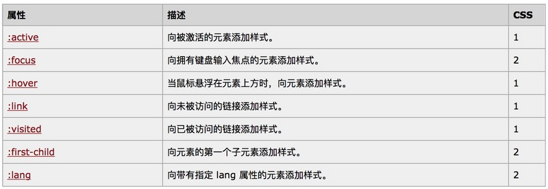
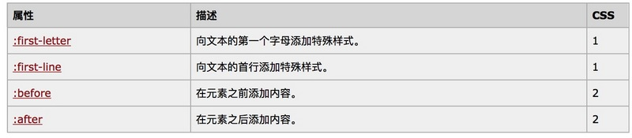
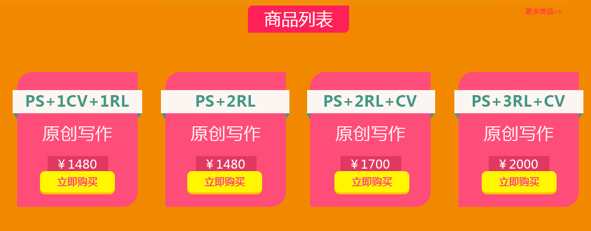

CSS伪类与CSS伪元素的由来
无论是 伪类还是 伪元素，都属于CSS选择器的范畴。所以它们的定义可以在CSS标准的选择器章节找到。分别是 CSS2.1 Selectors 和 CSS Selector Level 3，两者都已经是推荐标准。
在CSS2.1里，5.10 Pseudo-elements and pseudo-classes 描述了这两个概念的由来，它们是被一同提及的。但到了 Selector Level 3 里，它们就被分开到两个小节里加以区分。但无论如何，伪类和伪元素的引入都是因为在文档树里有些信息无法被充分描述，比如CSS没有“段落的第一行”之类的选择器，而这在一些出版场景里又是必须的。用标准里的话说：
CSS introduces the concepts of pseudo-elements and pseudo-classes to permit formatting based on information that lies outside the document tree.
简单翻译一下，就是：
CSS 引入伪类和伪元素的概念是为了实现基于文档树之外的信息的格式化
这么说很抽象，其实就是为了描述一些现有CSS无法描述的东西。缺少什么，则引入什么
介绍:
伪类和伪元素是css中很常见的两个概念，利用的好，能够很方便的实现一些特殊效果。伪类与伪元素由于用法相近，导致平时使用并不能很好的区分这两个概念。
伪类（pseudo-classes）： 伪类类似于class，用于对已有元素增加特殊状态，比如:hover, :active, :lang, :first-child等。
伪元素（pseudo-elements）：伪元素类似于element，用于在DOM中增加一个特殊的element节点，比如:after, :before, :first-line等。
伪类
伪类包括:hover, :active, :link, :focus, :visited, :lang, :first-child。其中每一个的作用如下图：

伪元素
伪元素包括:first-line, :first-letter, :before, :after。其中每一个的作用如下图：

:before在元素前添加一个元素。
:after在元素后添加一个元素。
有一些效果会有一个小尖头，可以很方便的用:before,:after来实现
例如:请看下面的实例应用:
例如商城服务商品列表页面:(该效果完全可以用样式来实现..)

伪元素是一个冒号还是两个冒号？
简单回答：多数情况下，都行。
两个冒号（::）是CSS3为了区分::before、::after这样的伪元素和:hover、:active等伪类才引入的。除了IE8及以下版本，所有浏览器都支持两个冒号的伪元素表示法。
- 伪类用一个冒号表示 :first-child
- 伪元素则使用两个冒号表示 ::first-line
理解:Before和:After伪元素
这就是
CSS伪元素(Pseudo-Element)可以发挥作用的地方，所谓‘伪元素’，就是本身不存在的页面元素，HTML代码里并没有这样的元素，但在页面显示时，你却能看到这些本来不存在的元素发挥着作用。